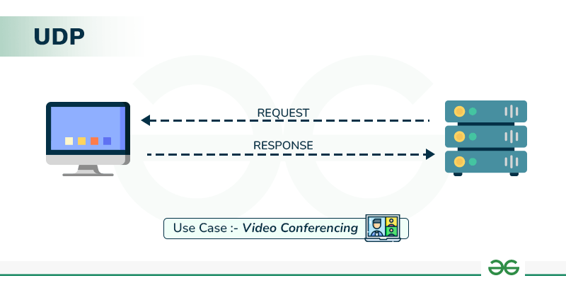
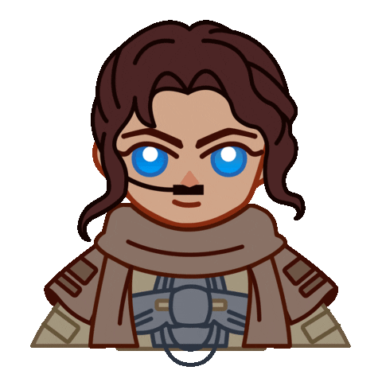

TCP (Transmission Control Protocol):
Definição: O TCP é um protocolo de transporte da camada de transporte do modelo OSI (Open Systems Interconnection). Ele fornece comunicação confiável e orientada à conexão entre aplicativos em redes de computadores.
Confiabilidade: O TCP garante que os dados sejam entregues de forma ordenada, sem erros, e sem perdas através de técnicas como confirmações de recebimento (ACKs) e retransmissões de pacotes perdidos.
Handshake de Conexão: Antes da transmissão de dados, ocorre um processo de estabelecimento de conexão chamado de "handshake de três vias" (three-way handshake), que estabelece uma conexão bidirecional entre o remetente e o destinatário.
Controle de Fluxo e Congestionamento: O TCP implementa mecanismos de controle de fluxo e congestionamento para garantir que a rede não fique sobrecarregada e que os dados sejam transmitidos de forma eficiente.

UDP (User Datagram Protocol):
Definição: O UDP é também um protocolo de transporte da camada de transporte do modelo OSI. Ele é um protocolo de comunicação não orientado à conexão, o que significa que não há garantia de entrega de pacotes nem ordenação.
Simplicidade e Baixa Latência: O UDP é mais simples que o TCP, o que resulta em menor sobrecarga de processamento e menor latência na transmissão de dados.
Aplicações: O UDP é comumente utilizado em situações em que a latência é crítica e pequenas perdas de dados são aceitáveis, como em transmissões de vídeo ao vivo, jogos online e serviços de streaming de áudio.
Sem Controle de Congestionamento: Ao contrário do TCP, o UDP não inclui mecanismos de controle de congestionamento, o que significa que os pacotes podem ser perdidos ou descartados em situações de alta carga na rede.

Clique no gif para voltar para o Menu
